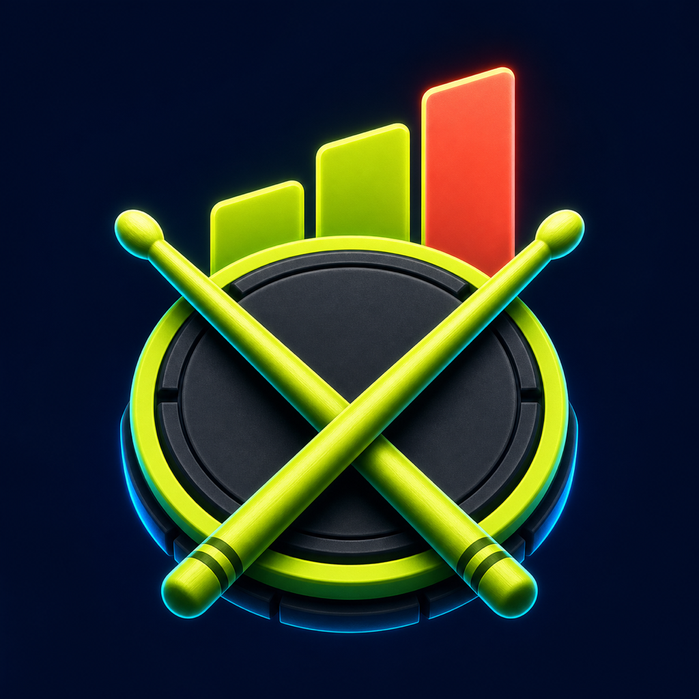
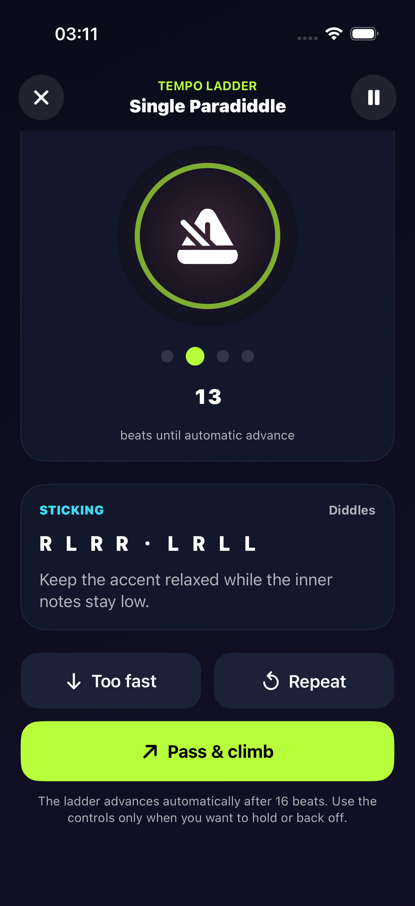

Pick one rudiment.
Start with a familiar sticking pattern and a comfortable tempo.

RudiRiseYOUR RUDIMENT WORKOUTHow it worksFOR PRACTICE-PAD & KIT DRUMMERS
Keep the beat going while your tempo ladder climbs. You decide what feels clean. RudiRise remembers the result.
For iPhone and iPad · Eight starter rudiments free.
Full 40-rudiment library, custom ladders and full history require Premium.
Opening the App Store in 2 seconds.
ONE RUDIMENT. CONTROLLED STEPS. A USEFUL RESULT.

THE PRACTICE LOOP
Start with a familiar sticking pattern and a comfortable tempo.
The metronome advances through the tempo steps while you practice.
Choose Pass, Repeat or Too Fast, then save where you finished clean.
RudiRise does not listen to or score your playing. You make the practice decisions.
A SMALL RESET FOR YOUR NEXT SESSION
Three sticking patterns, a simple tempo-ladder method and a printable practice log. Useful with a pad and any metronome—no app or email required.
Download the free PDF Free 5-page PDF · A practice suggestion, not an improvement guarantee.Warm up → Play controlled steps → Log your clean tempo
MAKE THE NEXT PRACTICE SIMPLE
Free starter library. Optional weekly or yearly Premium.
Current prices and renewal terms are shown by Apple before purchase.